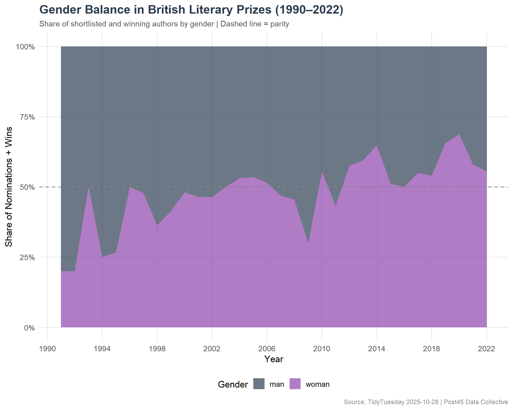
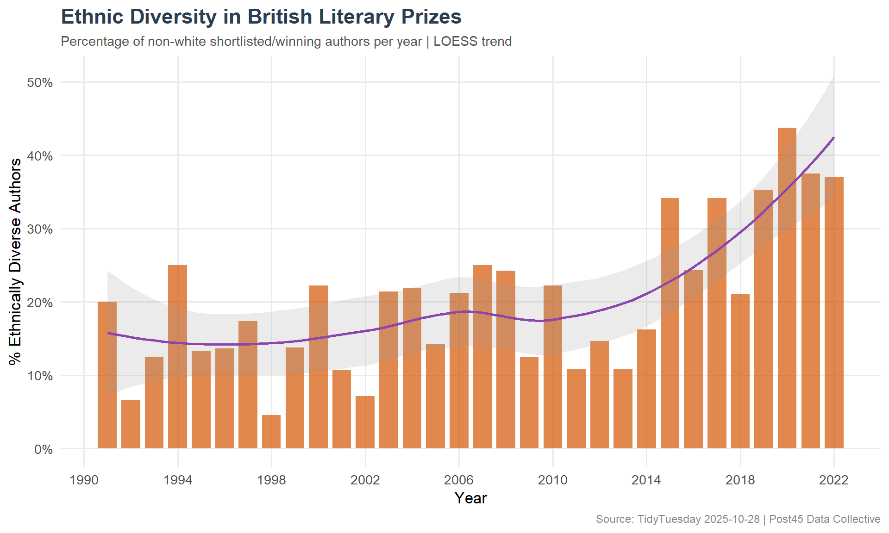

Three decades of British literary prize data — examining gender representation, ethnic diversity trends, and the educational backgrounds that predict literary prestige.
This dataset from the Post45 Data Collective examines 32 years (1990–2022) of British literary award data, documenting author demographics alongside prize information — including gender identity, ethnicity, educational background, and whether authors were shortlisted or won.
In which genres are women and ethnically diverse writers most frequently shortlisted or awarded?
Have prizes demonstrated improvement in gender and ethnic representation?
Does a connection exist between specific educational backgrounds and writer selection success?
Loading necessary packages
My handy booster pack that allows me to install (if needed) and load my usual and favorite packages, as well as some helpful functions.
raw <- tidytuesdayR::tt_load('2025-10-28')prizes <- raw$prizes
Exploratory Data Analysis
The my_skim() function is a modified version of the skimr::skim() function that returns the number of missing data points (cells as NA) as well as the inverse (e.g.: number of rows that are notNA), the count, minimum, 25%, median, 75%, max, mean, geometric mean, and standard deviation. It also generates a little ASCII histogram. Neat!
Literary Prizes
prizes %>%my_skim(.)
Data summary
Name
Piped data
Number of rows
952
Number of columns
23
_______________________
Column type frequency:
character
20
logical
1
numeric
2
________________________
Group variables
None
Variable type: character
skim_variable
n_missing
complete_rate
min
max
empty
n_unique
whitespace
prize_alias
0
1
11
39
0
15
0
prize_name
0
1
11
39
0
29
0
prize_institution
0
1
5
44
0
10
0
prize_genre
0
1
3
18
0
9
0
person_id
0
1
4
4
0
682
0
person_role
0
1
6
11
0
2
0
last_name
0
1
2
16
0
622
0
first_name
0
1
2
16
0
435
0
name
0
1
8
25
0
681
0
gender
0
1
3
10
0
4
0
sexuality
0
1
5
12
0
3
0
ethnicity_macro
0
1
5
18
0
9
0
ethnicity
0
1
5
34
0
149
0
highest_degree
0
1
2
24
0
10
0
degree_institution
0
1
3
52
0
187
0
degree_field_category
0
1
3
28
0
13
0
degree_field
0
1
3
48
0
160
0
viaf
0
1
3
22
0
676
0
book_id
0
1
5
5
0
861
0
book_title
0
1
1
91
0
859
0
Variable type: logical
skim_variable
n_missing
complete_rate
mean
count
uk_residence
0
1
0.7
TRU: 670, FAL: 282
Variable type: numeric
skim_variable
n_missing
complete_rate
n
min
p25
med
p75
max
mean
geo_mean
sd
hist
prize_id
0
1
952
1
8
10
13
16
9.74
8.41
4.22
▃▂▇▃▅
prize_year
0
1
952
1991
2002
2009
2016
2022
2008.52
2008.50
8.44
▅▆▆▇▇
prizes %>%count(prize_alias, sort =TRUE)
# A tibble: 15 × 2
prize_alias n
<chr> <int>
1 Booker Prize 191
2 Women's Prize for Fiction 162
3 Baillie Gifford Prize for Non-Fiction 141
4 Gold Dagger 107
5 Ted Hughes Award for New Work in Poetry 60
6 BSFA Award for Best Novel 33
7 James Tait Black Prize for Fiction 33
8 Costa Biography Award 32
9 Costa Book of the Year 31
10 Costa Children's Book Award 31
11 Costa First Novel Award 31
12 Costa Novel Award 31
13 Costa Poetry Award 31
14 TS Eliot Prize 30
15 James Tait Black Prize for Drama 8
prizes %>%count(person_role, sort =TRUE)
# A tibble: 2 × 2
person_role n
<chr> <int>
1 shortlisted 534
2 winner 418
prizes %>%count(gender, sort =TRUE)
# A tibble: 4 × 2
gender n
<chr> <int>
1 man 475
2 woman 470
3 non-binary 6
4 transman 1
prizes %>%count(ethnicity_macro, sort =TRUE)
# A tibble: 9 × 2
ethnicity_macro n
<chr> <int>
1 White British 499
2 Non-UK White 199
3 Asian 67
4 Irish 53
5 Jewish 43
6 Black British 29
7 African 23
8 Caribbean 20
9 Non-White American 19
# A tibble: 15 × 2
degree_institution n
<chr> <int>
1 unknown 181
2 University of Oxford 116
3 University of Cambridge 73
4 none 51
5 University of East Anglia 29
6 University of London 29
7 Harvard University 20
8 Trinity College, Dublin 19
9 Columbia University 13
10 University of Iowa 10
11 University of Sheffield 10
12 Queen's University 9
13 University of Edinburgh 9
14 University of Glasgow 8
15 Yale University 8
# A tibble: 10 × 2
highest_degree n
<chr> <int>
1 Bachelors 296
2 unknown 227
3 Masters 208
4 Doctorate 157
5 none 51
6 Postgraduate 6
7 Juris Doctor 4
8 Certificate of Education 1
9 Diploma 1
10 MD 1
Visualizing Diversity in British Letters
# Subdued literary palettegender_cols <-c("woman"="#8E44AD", "man"="#2C3E50")ggplot(gender_by_year, aes(x = prize_year, y = pct, fill = gender)) +geom_area(alpha =0.7) +geom_hline(yintercept =0.5, linetype ="dashed", color ="#888888") +scale_y_continuous(labels = scales::percent_format()) +scale_x_continuous(breaks =seq(1990, 2022, 4)) +scale_fill_manual(values = gender_cols, name ="Gender") +labs(title ="Gender Balance in British Literary Prizes (1990–2022)",subtitle ="Share of shortlisted and winning authors by gender | Dashed line = parity",x ="Year",y ="Share of Nominations + Wins",caption ="Source: TidyTuesday 2025-10-28 | Post45 Data Collective" ) +theme_minimal(base_size =13) +theme(plot.title =element_text(face ="bold", size =17, color ="#2C3E50"),plot.subtitle =element_text(size =11, color ="#555555"),plot.caption =element_text(size =9, color ="#888888"),legend.position ="bottom",panel.grid.minor =element_blank() )

ggplot(ethnicity_by_year, aes(x = prize_year, y = pct_diverse)) +geom_col(fill ="#D35400", alpha =0.7, width =0.8) +geom_smooth(method ="loess", se =TRUE, color ="#8E44AD", linewidth =1, alpha =0.2) +scale_y_continuous(labels = scales::percent_format()) +scale_x_continuous(breaks =seq(1990, 2022, 4)) +labs(title ="Ethnic Diversity in British Literary Prizes",subtitle ="Percentage of non-white shortlisted/winning authors per year | LOESS trend",x ="Year",y ="% Ethnically Diverse Authors",caption ="Source: TidyTuesday 2025-10-28 | Post45 Data Collective" ) +theme_minimal(base_size =13) +theme(plot.title =element_text(face ="bold", size =17, color ="#2C3E50"),plot.subtitle =element_text(size =11, color ="#555555"),plot.caption =element_text(size =9, color ="#888888"),panel.grid.minor =element_blank() )

Final thoughts and takeaways
British literary prizes have slowly but measurably diversified over three decades. Gender representation has approached parity in recent years, with women regularly making up half or more of shortlists — a meaningful shift from the male-dominated early 1990s. Ethnic diversity shows a more uneven trajectory, with notable gains in some years but inconsistent progress overall.
The educational background data reveals an uncomfortable truth about literary prestige: Oxbridge graduates remain heavily overrepresented among prize nominees and winners. This suggests that access to literary networks, mentorship, and publishing connections may matter as much as raw talent — a structural advantage that diversity initiatives in prize selection alone cannot fully address.
Note
The researchers emphasize that this data captures broad patterns and “is not intended as definitive.” Demographic classifications — particularly around ethnicity and gender — are based on publicly available information and may not reflect individuals’ self-identification.